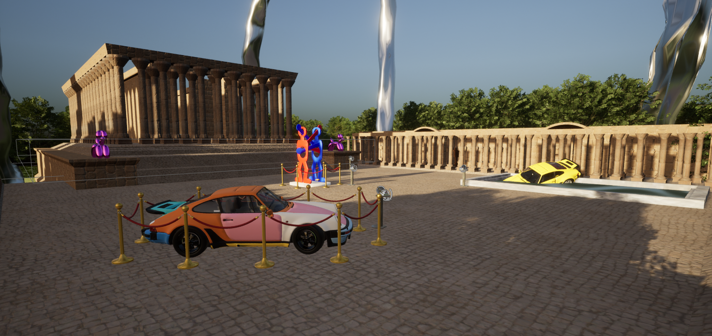
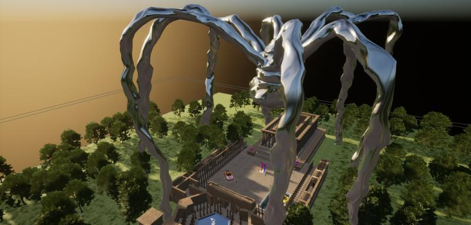

Musée Virtuel - Visite intéractive en réalité virtuelle

Description
Le musée interactif en réalité virtuelle a été réalisé sur Unreal Engine 5.
Il comporte plusieurs œuvres d'artistes différents que nous avons recréé en 3D pour la grande majorité, ainsi qu'un scénario où
le but est de partir à la recherche d'un croissant pour chaque œuvre afin de les remettre à leur place sur des piliers.
Nous avons appris à utiliser les blueprints pour développer certaines fonctionnalités,
comme la radio ou encore les nombreux boutons servant à présenter les œuvres grâce à des fichiers audio. De plus,
nous avons appris le texturing et l'UV mapping afin d'appliquer différentes textures et de corriger d'éventuels défauts.
Nous avons également exploité différents assets pour la génération procédurale des végétaux et du ciel, afin de lui donner du volume et de la
dynamique.
Technologies utilisés
Pour développer ce projet plusieurs technologies ont été utilisées :
- Unreal Engine 5
- 3DS Max
- blueprints
- Réalité Virtuelle